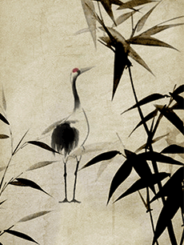

ТЕХНІКИ ГОХУА
В наші дні живопис гохуа значно розширив свій діапазон і вийшов за вузькі рамки традиційних тематик, слідуючи новому часу. Сучасні майстри художньої кисті наповнюють свої полотна, виконані в стилі гохуа, новим змістом, живим духом сучасності.
Традиційний китайський живопис – це в основному монохромні зображення, що створюються за допомогою ліній. Ще одна важлива відмінність китайського живопису від європейської це те, що китайські майстри всі свої картини пишуть без попередніх ескізів.

МАТЕРІАЛИ
В китайському живописі використовуються абсолютно різні матеріали. Це рисовий папір сюань, мінеральні фарби, китайська туш і пензлі з вовни кози і/або вовка. Відмінною особливістю таких пензлів є їх гігроскопічність, необхідна для нанесення пігментів на рисовий папір, яка володіє підвищеною поглинанням. А про співвідношення туші і кольору в мальовничому полотні китайці кажуть так: туш в картині - господиня, колір в картині - гість.
Гохуа вважається близьким по використовуваних інструментах до каліграфії. У Китаї в якості носія кольору використовуються плитки туші з чорним лаковим блиском, яку розтирають з водою до потрібної консистенції, а також водяні фарби з мінеральними і рослинними пігментами. В якості основи картини використовується шовк (іноді бавовняна або конопляна тканина). Для нанесення фарб використовують кисті з бамбука і шерсті домашніх або диких тварин (козячої, кролячій, оленячої, білячої і т. д.).
Майстри живопису в Китаї використовують пензлі різних розмірів, від дуже тонких, до дуже товстих. Штрих може бути легким, як осінній лист, або потужним, як тигр. Проте картини Гохуа не завжди пишуть пензлем. Використовується техніка нанесення зображення пальцями. Лінії виводять подушечкою пальця і нігтем - в залежності від сюжету або форми, які необхідно передати. Для розтушовування фарба наноситься двома або трьома пальцями. Нерідко використовується тильна сторона пальця або край долоні.
ОСОБЛИВОСТІ
Для китайського живопису характерно лаконічність, ясна композиція, а також виразні і ритмічні контури і звичайно ж площинне виконання без світлотіней. Ще однією незвичайною особливістю є позначка картин печаткою майстра, яка замінює особистий підпис.
У гохуа має одночасно поєднуватися кілька протилежностей: сухе і мокре, велике і мале, довге і коротке, темне і світле, часте і рідкісне. Контраст Гохуа - це поєднання контрастних зображень. Багато художників мають вузьку спеціалізацію: півонії, бамбук, орхідеї, коні, риби.
Китайські художники передають з покоління в покоління стародавні традиції живопису гохуа, зберігаючи це мистецтво. Але, кожне наступне покоління привносить щось нове. Незмінним залишаються лише так звані «чотири скарби кабінету вченого чоловіка» - це туш, пензлик, тушечниця і папір.
ТЕХНІКИ ГОХУА
Вирізняють два стилі китайського живопису: гунби та се-і.
Гунби - «техніка старанного пензля», «техніка тонкого пензля». Передбачає реалістичність і високу деталізацію предмета, прописування дрібних деталей. Художники, які працювали на службі у імператора, зобов'язані були володіти стилем гунби.
Особливості властиві стилю гунби:
- Деталізація предмета, контурна техніка.
- Посилення контрасту шляхом пошарового накладання кольору.
- Вишукане зображення предметів.
Се-і (寫意) - це передача ідеї і почуттів художника. У цьому стилі немає чітких ліній, немає деталізації. Стилю Се-і притаманні широкі, вільні мазки широким пензлем.
Недарма цей стиль називають «грубий пензель». Цей стиль передбачає вільну манеру письма. Тут головне не зовнішня схожість, а своє особливе бачення, стан душі майстра, сутність об'єкта. Саме тут художник творить під впливом миттєвого настрою, з натхнення. Копіювати такі картини дуже важко, скоріше не можливо.